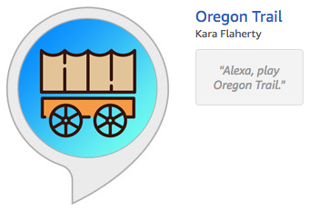

Portfolio: Development
Alexa skill development from scratch: the Oregon Trail game
I previously wrote about creating Alexa skills using the fact and trivia samples to create Kurt Vonnegut Quotes and Stranger Things Trivia. The fact sample was pretty simple, but I had run into some issues with the trivia sample, which really forced me to dig a bit deeper into the code and understand how a voice interface is designed. In the process, I learned so much more about how Alexa works and how to build responses, I felt like I had a fairly good grasp of the process. That's when I decided to take a dive off the deep end and code an Alexa skill from scratch.
I had gotten the idea of creating a voice version of the Oregon Trail game — a staple from my childhood, especially since I grew up one block from the Oregon Trail's route in western Nebraska — after seeing this article about the Oregon Tourism Commission creating a spin-off of the classic game called Travel Oregon. I was so amused by this idea that I then thought, wait, why don't I create my own spin-off? A quick search on the Alexa skills store showed no one had developed it yet, so I decided to run with my idea. Oregon Trail, here I come! (Side note: I eventually found out that someone else actually did have the idea — Uncorked Studios in Portland — but they didn't see it through to production. Lucky me!)
First things first: figuring out the game's logic
I didn't want to juggle writing game logic and Alexa skill logic at the same time, so I focused my first effort on creating the game in simple, vanilla JavaScript. It took me about two weeks to build the game on repl.it (which you can play here, though be forewarned it is still imperfect: repl.it/@karakarakaraff/theOregonTrail), then I spent another week asking all of my coworkers and friends to play the game so I could get a decent amount of user feedback and weed out as many bugs as we could find.
After I felt the game was ready to go, I figured I'd just change the alerts and prompts to Alexa's voice, build the response, and voila! Done! To put it kindly, I was incredibly naive for thinking it would be that simple. It is never that simple.
Separating states according to intents
After realizing the error of my assumptions about the process of transforming the browser version into the voice version, I knew I was in for a long haul. But that's ok — this was to be my capstone project for Bloc, and I had three months to spend on it.
Looking at the Alexa trivia sample, I saw there was an intro state and a playing state. The intro state is what introduced the player to the game, and the playing state was the actual gameplay itself. I figured I could follow a set up similar to this, so I designed my skill to have an intro state where the user sets their name, the names of the people in their party, their profession, their supplies and the month they want to start their journey on the Oregon Trail, and then a secondary playing state would handle the actual Oregon Trail part of the game.
I actually fully coded the user setup state and got it to work successfully as long as I answered Alexa in an expected way. For example:
Alexa: What is your name?
User: Kara.
Alexa: Hello, Kara. You can be a banker, a carpenter, or a farmer. What do you want to be?
User: I want to be a banker.
Alexa: When do you want to start your journey?
User: April.
Easy enough, right? But as I tested this with all of my friends' names, I found a flaw when it came to my friend, April.
Alexa: What is your name?
User: April.
Alexa: Ok, you will start your journey in April. / There was a problem with the requested skill's response.
And what if the user jumps the gun?
Alexa: What is your name?
User: I want to be a banker!
Alexa: Great! You're a banker. / There was a problem with the requested skill's response.
And therein lies the problem: You can never count on the user to respond in an expected way, and you have to program Alexa to handle everything a user could possibly say. This is why intents and state management are so important! In both of the above cases, depending on the state and which intents were included in that state, Alexa either did not or could not resolve unexpected user input to match what she was expecting: a name.
I fixed this in two ways: First, I broke up the user setup state into a bunch of different states: one for GetName, one for GetProfession, one for GetSupplies, one for GetStartingMonth, etc. By creating dedicated states for each piece of information I needed to gather, I could force the user to answer Alexa's questions or, alternatively, force Alexa to resolve the user's answers as the intent I wanted.
Now, if Alexa asks for a name and the user says, "I want to be a banker," she'll recognize this as belonging to the profession intent (which is not the intent she wants) and she'll prompt the user for their name again. The same thing could be said for if the user says their name is April — again, Alexa will see this as a month intent and ask the user for their name again. That brings me to the second step in the solution: creating an exception specifically for people whose names are also months.
if (this.event.request.intent.name !== "GetName") {
if (this.event.request.intent.name === "GetStartingMonth") {
var username = this.event.request.intent.slots.month.value;
}
} else {
this.response.speak("I'm sorry, but that's not a name I understand. Please choose another name.").listen("Please choose another name.");
this.emit(":responseReady");
}
As you can see, this piece of code tells Alexa that if she doesn't understand the name, she should first check to see if it's a month. If it is, she'll save the value of that month as the user's name. If it's not a name or a month, she'll then prompt the user again to say their name.
No value in intent
Here's another possibility you could run into: What if the user starts to answer but never actually does? Imagine a scenario like this:
Alexa: You can be a banker, a carpenter, or a farmer. What do you want to be?
User: I want to be a ... *thinks about it* ... *still thinking*
Alexa: /end
To be honest, this scenario didn't even occur to me when I first submitted my skill for certification. I had thought of all the things a user could say, but I didn't think about what they might not say. And because I hadn't written anything into my code to handle this, Alexa would end the session and the game would simply stop.
Since this is something the certification team brought to my attention, I figured a quick Google search would find other people who ran into the same issue, and I was right. The most helpful bit of information I found was, as usual, on Stack Overflow: Alexa Custom Slot Type: No value in intent. Here's the solution:
if (this.event.request.intent && this.event.request.intent.slots && this.event.request.intent.slots.profession && this.event.request.intent.slots.profession.value) {
var profession = this.event.request.intent.slots.profession.value;
} else {
this.response.speak("I'm sorry, but that's not a profession I understand. Please choose to be a banker, a carpenter, or a farmer.").listen("Please choose to be a banker, a carpenter, or a farmer.");
this.emit(":responseReady");
}
That massive "if" statement is the key. The code will check to see if the user started a specific intent and, if so, make sure the user provided a value for that intent. Now, when you say, "I want to be a ... ," Alexa will take those words and match them with the interaction model (which has "I want to be a {profession}" built into it), understand that you're trying to answer her question about a profession, but see that you did not provide a value. This gives her the opportunity to prompt the user again rather than completely ending the session.
Global variables vs session attributes
As much as I tested this skill before pushing it to production, I didn't realize there was one major drawback: in testing, only I am testing it, and because I'm one person, I'm testing the Lambda function with one game at a time. However, when a skill goes live, there's the possibility that multiple people will be using the skill at the same time, meaning they'll all be sharing the same Lambda function. This was my first time writing a Lambda function without a template, and I did not have enough experience to consider this. Therefore, I made a huge mistake: I wrote all of my game variables as global variables.
I realized something was wrong when several of my friends who tried the skill reported back about weird things happening. One person was allowed to buy things at the fort with negative money. Another person was told, "Andy died of dehydration," even though there was no Andy in their party. One person was near the beginning of the trail, then suddenly at the end of the trail. I had specifically thought out and written code so that none of this would happen, so why was it happening?!
That's when I discovered session attributes. And, oh man, session attributes are so very important. Before running into this problem, I thought session attributes were only necessary for persisting user data between sessions (for example, the user could quit half way through the game, then come back later and pick up where they left off). NOPE. As it turns out, session attributes are necessary if there's any user data at all that you don't want to share with other users.
By using global variables, Person 1 could be halfway through the game when Person 2 also starts playing the game. When Person 2 enters, they're asked for their name, which is saved to the mainPlayer variable. However, now that name is going to be used for both Person 2 and Person 1. When Person 3 shows up and overwrites the variable with their name, it will apply to all three games. And to think, that's just one variable of nearly 50 that I have written into the game! You can see how it can get really messy really fast.
As with all programming, a massive mistake equals a lesson learned quick. Thankfully, all I had to do was replace all of my global variables with session attributes. So, instead of this: var mainPlayer = "Kara", I used this: this.event.session.attributes.mainPlayer = "Kara"
I could confirm it was working by checking the JSON data in the testing console:
{
"session": {
"sessionId": "amzn1.echo-api.session.[unique-value-here]",
"attributes": {
"STATE": "_USERSETUPMODE",
"mainPlayer": "Kara"
}
}
}
Yes, I learned this lesson the hard way, and it even cost me a 1-star review on my skill, but I can tell you this much — I will never make that same mistake again!
Planning for one-to-one interactions
The most difficult part of building this particular Alexa skill was keeping in mind the one-to-one interaction that Amazon requires — meaning you can only offer one response to each request — as well as the many restrictions Amazon places on responses. In the original Oregon Trail game, you are constantly updated as to the miles you've traveled, the amount of supplies, etc. When designing for voice, however, these updates had to be bundled with one response, and only one. Also included in that bundle are traveling sound effects (the length of which are determined by how many days go by without any incidents on the trail), alert sounds effects, and Alexa's message, which must conclude with listening for the user to respond. With all sound effects together, there can't be more than five, and they can't last longer than 90 seconds combined.
This kind of one-to-one interaction requires you to build Alexa's response all at once, which means you must always think a step ahead. For example, it's possible for the user to travel along the Oregon Trail for six days without anything happening, then on the seventh day, they find berries. As my code is built, this means the following must happen:
- The travel function must run six times and track the days without incident each time, increasing the counter each time until it reaches the number six.
- The travel function runs a seventh time and determines the user found berries, so the counter stops.
- The berries function determines how many berries the user found and adds this amount to the food amount.
- The six days without incident are pushed to the travel sound effects, which requires two effects: a long effect to represent five days and a short effect to represent one day. These are pushed to the response.
- The fact that berries were found pushes a good news alert sound effect to the response.
- The response adds the sound effects to Alexa's speech method.
- The response builds Alexa's actual speech, which will tell the user how many berries they found.
- The response will also build a listening method, which asks for and waits for the user to indicate they'd like to continue the game.
- All of the pieces of the response are assembled and pushed to the user.
All of this happens in a fraction of a second! So the user will say, "OK," to continue the game, and the entire process will run again. It will appear to the user that the travel sound effects begin immediately and that the skill is doing something each day, but really, their fate has already been predetermined the moment they hear anything from the speaker.
Writing code for this kind of interaction requires you to plan out exactly how Alexa's responses will be built, and because the context of each response can be so different, you have to be especially creative and organized not only in how you handle each response, but also in how the state handlers handle responses as the skill prepares for the user's next response.
Overall, building for voice forced me to totally rethink how I approach user interactions. I won't lie, my code feels a little clunky in the ways I had to alter it to make it fit within Amazon's requirements and limitations, but I reduced the code smell a fair bit, fixed the bugs, and most importantly, I made it work.
UPDATE: August 7, 2018
I decided to do a hard suppression of my skill because, to be perfectly honest, I didn't have the time or energy to continue updating it. At some point, Amazon updated something somewhere that introduced a few small bugs into how my skill functioned. This had happened previously, for example when Alexa inexplicably stopped understanding months of the year, forcing me to hard code everything instead of relying on Alexa's built-ins. Eventually, it just became too much and less of a priority for me. Regardless of my disinterest, this skill has tons of potential. It still lives within my developer account, but if anyone out there would be interested in taking on this monster, I'll happily transfer it your way!
► See Oregon Trail live on the Amazon marketplace: Alexa Skills: Oregon Trail
► See the code behind Oregon Trail: Github
Alexa Skills: GitHub
Date: November 2017 - January 2018
Project Checklist: JavaScript, Node.js, SSML, JSON, AWS Lambda, Alexa Skills Kit
Built for Bloc.io